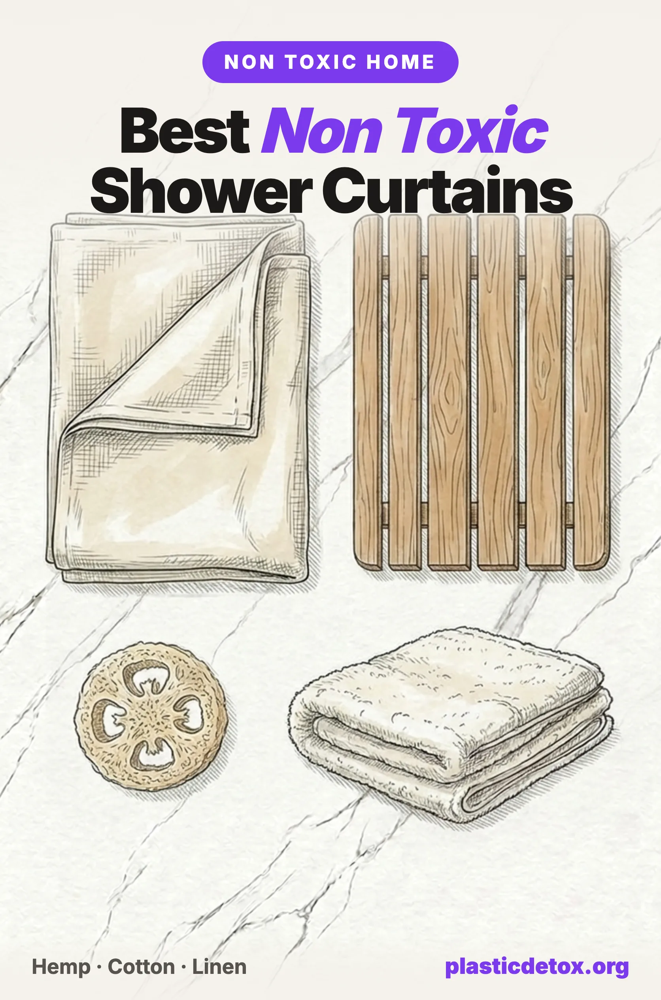

Best Non Toxic Shower Curtains and Bath Products (2026)

The 30 Second Summary
- That new shower curtain smell is 108 chemicals. A PVC curtain released 108 volatile organic compounds into the air, more than 16 times the indoor air guideline in the first week (CHEJ, 2008).
- PEVA and EVA are less bad, not non toxic. They drop the chlorine and phthalates of PVC but are still plastic and still off gas. Natural fabric is the real answer.
- Best overall: a hemp shower curtain, naturally mildew resistant with a weave tight enough to skip the plastic liner entirely.
- Softer look: an OEKO-TEX certified cotton curtain or true linen, both plastic free, just pull them fully open to dry.
- Skip the plastic hooks too. Rustproof 304 stainless steel rings outlast the brittle plastic ones and never crack.
- Round out the bath: a plant based loofah instead of a plastic mesh pouf, organic cotton towels instead of microfiber, and a teak wood bath mat instead of a PVC one.
The shower curtain is one of the last big pieces of soft plastic most people keep in their home, and it hangs a few feet from your face while you breathe deeply in a warm, humid room. If your curtain is vinyl, that warm steam is doing exactly what a lab would do to test for off gassing: it is coaxing chemicals out of the plastic and into the air you inhale.
The good news is that the fix is simple, and the alternatives look better and last longer than the plastic they replace. This guide explains what is actually in a conventional shower curtain, why PEVA is only a half solution, and which hemp, organic cotton, and linen curtains are worth buying. Then it rounds out the rest of the bathroom with non toxic bath mats, towels, hooks, and more.
1. The Problem with PVC Shower Curtains
Most cheap shower curtains and nearly all clear or frosted plastic liners are made from polyvinyl chloride, or PVC (recycling code 3, sometimes just labeled "vinyl"). PVC is rigid on its own, so manufacturers add plasticizers, most often phthalates, to make it soft and drapey. Those plasticizers are not chemically bound to the plastic, which means they migrate out over time, into the air and onto surfaces as dust.
In 2008, the Center for Health, Environment and Justice ran one of the only direct tests of shower curtains ever published. The results were striking. A single PVC curtain released 108 different volatile organic compounds into the air. Total VOC concentrations measured more than 16 times the US Green Building Council guideline for acceptable indoor air quality, and remained above that guideline for the first seven days. One chemical was still off gassing 28 days later, at the end of the test.
The phthalates most commonly found in vinyl products, DEHP and DINP, are the same plasticizers that regulators in California, Washington, and the European Union have restricted in children's products because of concerns about hormone disruption and reproductive effects. They are also linked in the research literature to the developing endocrine system, which is why so many parents start their plastic audit in the bathroom. Some vinyl curtains additionally carry small amounts of heavy metals and organotin stabilizers.
Beyond the air quality issue, a vinyl curtain is a slab of soft plastic that sheds microplastics as it ages, cracks, and is eventually thrown away, where it will sit in a landfill for centuries. PVC is also one of the least recyclable and most problematic plastics to manufacture and incinerate. There is simply no version of a vinyl shower curtain that is a good idea.
2. PEVA and EVA: Safer Plastic or Marketing?
Walk down the shower curtain aisle and you will see a lot of liners now labeled PEVA or EVA, usually with a badge that says something like "PVC free" or "non toxic." This is a real improvement over vinyl, but the marketing oversells it.
PEVA (polyethylene vinyl acetate) and EVA (ethylene vinyl acetate) are chlorine free plastics that do not require phthalate plasticizers to stay soft. That means they skip the two worst features of PVC: the chlorine chemistry and the migrating phthalates. They also lack that heavy vinyl smell. On the narrow question of "is this better than PVC," the answer is yes.
But PEVA is still plastic. It can off gas its own, lower level VOCs, and it has been studied far less than PVC, so the long term picture is genuinely incomplete. At least one toxicological analysis of PEVA found the VOCs it emits are not benign. The honest framing is this: PEVA is a less bad plastic, not a non toxic material. If your only choice is between a PVC liner and a PEVA liner, choose PEVA. But if the goal is a genuinely non toxic bathroom, the better move is to leave plastic behind entirely and use a fabric curtain that needs no liner at all.
3. Hemp: The Best Non Toxic Curtain
Hemp is the standout material for a shower curtain, and it solves the one objection people have to going plastic free: the fear of a soggy, moldy fabric curtain.
Hemp fiber is naturally resistant to mold, mildew, and bacteria. Its long, hollow fibers wick moisture and dry quickly, and the tightly woven fabric is hydrophobic enough that water beads and runs off rather than soaking through. In practice this means a hemp curtain stops overspray on its own, so you do not need a separate plastic liner behind it. One curtain, no plastic, no liner to replace every few months.
- Antimicrobial by nature. Hemp resists the mildew that people wrongly assume all fabric curtains attract. No chemical treatment required.
- No liner needed. The dense weave blocks water, doing the liner's job without the plastic.
- Machine washable. Toss it in the wash every few weeks and hang to dry. It gets softer over time.
- Extremely durable. Hemp is one of the strongest natural fibers. A good hemp curtain lasts many years, outliving a stack of plastic liners.
The tradeoffs are honest ones: hemp curtains have a natural, slightly rustic look rather than a crisp printed pattern, and they cost more up front than a plastic curtain. But amortized over their lifespan, and against the liners you never have to buy, they are the better value as well as the healthier choice.
4. Organic Cotton and Linen
If you want a softer, more traditional look than hemp, organic cotton and linen are both excellent plastic free options.
Organic Cotton
A heavyweight cotton or cotton canvas curtain drapes beautifully and machine washes easily. Look for GOTS certified organic cotton, which guarantees the fiber was grown without the pesticides used on conventional cotton and processed without the formaldehyde finishes, chlorine bleaching, and heavy metal dyes allowed in standard textiles. A heavier canvas weight curtain is dense enough to use without a liner. The main care note is that cotton dries more slowly than hemp, so pull it fully open across the tub to air dry after each shower.
Linen
Linen, made from flax, is naturally moisture wicking and gets more supple with every wash. It gives a relaxed, textured look that many people love. One honest warning: most "linen" shower curtains on the market are actually polyester or a polyester blend made to look like linen. Read the fiber content, not the product name. A genuine linen or high linen blend curtain is worth seeking out; a "linen look" polyester one is just a printed plastic fabric.
5. Do You Even Need a Liner?
The whole reason plastic liners exist is that thin, printed decorative curtains cannot hold back water. Once you switch to a proper fabric curtain, the liner problem mostly disappears.
- Hemp or heavy canvas cotton: No liner needed. The weave blocks overspray on its own. This is the simplest, cleanest setup.
- Lighter fabric curtains: If your curtain is a thinner weave and lets a little water through, use a second fabric panel as the liner rather than a plastic one. The Bean Products Organic Cotton Stall Panel (a narrow 36x74 in organic cotton panel) is made for exactly this, and it doubles as the curtain for small stall showers. It washes with the curtain and never off gasses.
- If you truly want a plastic liner: Choose a PEVA or EVA liner clearly labeled chlorine free and phthalate free, never PVC or vinyl. Treat it as the least bad option, not a non toxic one, and air it out before hanging.
Whatever you hang it on, swap the flimsy plastic hooks for rustproof 304 stainless steel rings. Plastic hooks yellow, get brittle, and snap; stainless rings glide smoothly and last the life of the curtain. A set of a dozen costs only a few dollars.
6. Material Comparison Table
| Material | Off Gassing | Liner Needed | Best For |
|---|---|---|---|
| Hemp | None | No | Best overall, mildew resistant, no liner |
| Organic cotton (canvas) | None | No, if heavyweight | Soft, classic look, GOTS certified |
| Linen | None | Light weaves may | Relaxed texture, gets softer with washing |
| Recycled polyester | Minimal | No | Budget fabric option, sheds microfibers in wash |
| PEVA / EVA | Some | Is the liner | Least bad plastic liner, not non toxic |
| PVC / vinyl | 108 VOCs | Is the liner | Not recommended |
7. Our Shower Curtain Picks
Three plastic free curtains we would happily hang in our own bathrooms. The hemp pick leads because it needs no liner and resists mildew on its own; the cotton and linen options follow for anyone who wants a softer look.

Bean Products Hemp Curtain
100% natural hemp, unbleached, 70x74 in. Naturally mildew resistant weave blocks overspray with no liner. Machine washable, made in the USA.
View →
Madison Park Arlo Cotton
100% cotton waffle weave, OEKO-TEX Standard 100 certified, 72x72 in, machine washable. No PVC or vinyl. Pull fully open to air dry after showering.
View →
Stonebridge Linen Cotton Curtain
Genuine linen and cotton weave, 72x72 in, woven in Portugal, machine washable. Natural fiber, not the polyester made to look like linen that most listings sell.
View →For hanging any of them, the Uigos 304 Stainless Steel Shower Curtain Rings (set of 12) are a cheap, rustproof upgrade over plastic hooks that glide smoothly and never crack.
8. Beyond the Curtain: Non Toxic Bath Products
Once the curtain is handled, a few other bathroom items are quietly plastic. Here are the easy, worthwhile swaps, ordered from lowest to highest price.

Chill Ah Natural Loofah
100% plant fiber, no plastic mesh or nylon, biodegradable. A direct swap for the nylon pouf, which sheds microplastics as it breaks down.
View →
Delara Organic Cotton Towels
GOTS certified organic cotton, 650 GSM, OEKO-TEX verified dyes. No microfiber, so no plastic fibers shed into wash water or air the way polyester towels do.
View →
Utoplike Teak Bath Mat
Solid teak slats, natural oils resist mold and mildew, non slip feet, drainage gaps. A durable alternative to the PVC or foam mats that trap water.
View →A few more bathroom items worth a second look: the classic vinyl bath toys that squirt water are a mold and phthalate concern for kids, plastic mesh sponges and poufs shed microplastics, and synthetic "microfiber" bath mats and towels release plastic fibers every wash. None of these need to be replaced in a panic, but as each one wears out, the plastic free version is usually just as cheap and works better.
9. Care: Keeping Fabric Curtains Mildew Free
The single myth that keeps people hanging plastic is the belief that fabric curtains get moldy. They do not, as long as they can dry. The trick is airflow, and it takes no effort once it is a habit.
- Pull it fully closed after showering. Spread the curtain flat across the tub so the whole surface can air dry, rather than leaving it bunched at one end where folds stay damp.
- Run the fan or crack a window. Ventilation clears the humidity that feeds mildew on any surface, plastic or fabric.
- Machine wash every few weeks. Warm water and regular detergent. For hemp and cotton you can add a cup of white vinegar to the rinse to keep the fabric fresh and soft. Skip fabric softener, which coats fibers and reduces their natural water shedding.
- Hang to dry, or tumble low. Most fabric curtains air dry quickly right back on the rod. Check the label before using high heat.
- Spot treat early. If you ever see the start of a spot, wash promptly. A fabric curtain that is washed regularly simply never reaches the state a neglected plastic liner does.
10. Frequently Asked Questions
Why do new shower curtains smell like chemicals?
That smell is off gassing. A 2008 study by the Center for Health, Environment and Justice found a single PVC shower curtain released 108 different volatile organic compounds into the air, with total concentrations more than 16 times the US Green Building Council indoor air guideline during the first week. The smell fades over weeks, but it signals that the vinyl is releasing chemicals into your bathroom air.
Is a PEVA or EVA shower curtain safe?
PEVA and EVA are genuinely less toxic than PVC because they contain no chlorine and no added phthalates, so they lack vinyl's worst ingredients and that heavy chemical smell. But they are still plastic and can off gas their own lower level VOCs, and the material is under studied. PEVA is best described as a less bad plastic, not a non toxic material. Natural fabric like hemp, organic cotton, or linen is the genuinely non toxic choice.
What is the best non toxic shower curtain material?
Hemp is the best overall. It is naturally resistant to mold, mildew, and bacteria, its tight weave repels overspray so you do not need a plastic liner, and it is machine washable and long lasting. Organic cotton and linen are also excellent plastic free choices, though they dry more slowly and benefit from being pulled fully open to air dry after each shower.
Do fabric shower curtains get moldy?
Fabric curtains resist mold far better than most people expect, especially hemp, which is naturally antimicrobial. The key is airflow. Pull the curtain fully closed across the tub after showering so it dries flat instead of bunched, and machine wash it every few weeks. Any fabric curtain that is left balled up and wet can grow mildew, just like a damp towel.
Can shower curtains contain PFAS?
Some fabric shower curtains marketed as water repellent or quick drying are treated with PFAS based finishes, the same forever chemicals used to make textiles stain and water resistant. Choose an untreated natural fabric like hemp or organic cotton, which repels overspray through its weave rather than a chemical coating, and skip any curtain that advertises a durable water repellent or stain proof treatment.
Related Articles
- How to Avoid BPA and Phthalates in Everyday Products
A room by room guide to the plasticizers hiding in vinyl, and how to cut your exposure. - Microplastics in Clothing and Laundry
Why synthetic textiles shed plastic fibers, and how to wash them with less shedding. - Microplastics in Indoor Air
The plastics off gassing and shedding inside your home, and how to lower the load. - What Are PFAS? The Forever Chemicals Explained
The water repellent finishes on textiles and cookware, and why they never break down. - How to Start Reducing Plastic Exposure
A practical priority guide for reducing plastic in your daily routine.